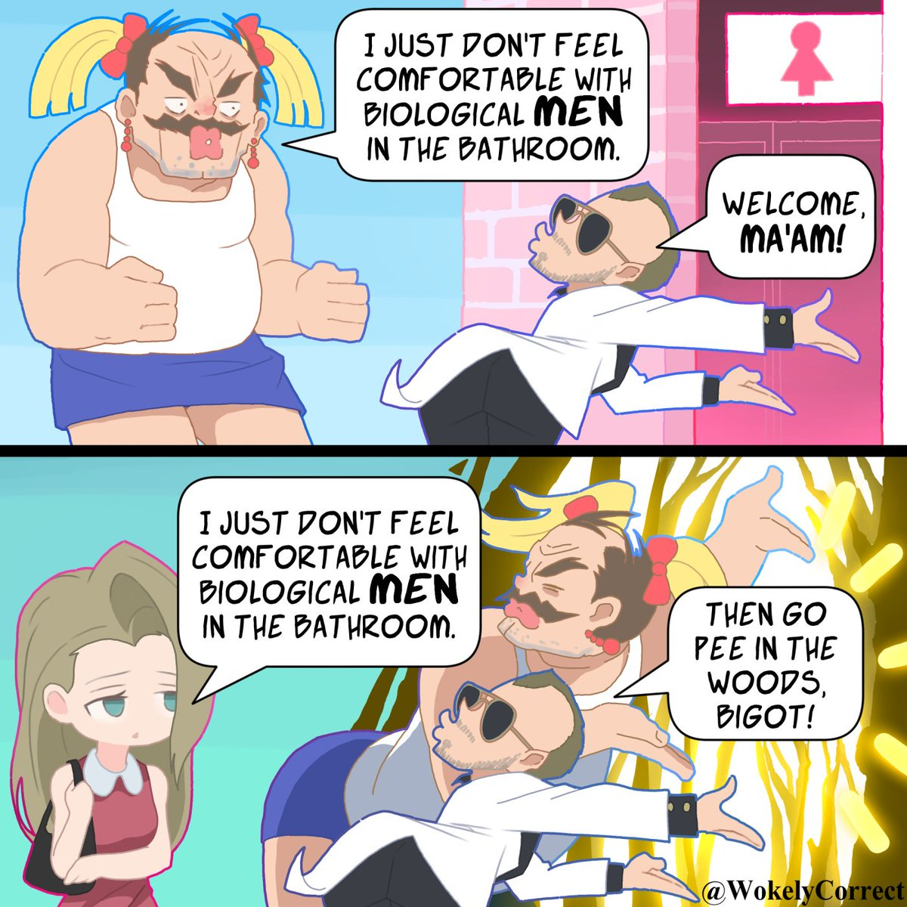

🍀🍥竹蜻蜓🍥🍀（戒od第1天）
@zqtlovekris99
心情

Maybe Monad 🏳️⚧️
@diedqbird
真操了，我寻思着性别光谱上那么多位置留给你们可以不在意胡子不在意激素不在意几把的人，非要过来挤二元跨女的位置，跑出来篡改二元跨女的定义，咋的你觉得二元跨女太死板了你进步的眼睛看不得？
🍀🍥竹蜻蜓🍥🍀（戒od第1天）
@zqtlovekris99
為什麼有跨女不刮鬍子的。刮個鬍子就成規訓了，我看你還是毒打挨少了。在那說他體毛特別重天天刮好麻煩，你又麻煩上了。順男都得天天刮鬍子。買個電動剃鬚刀就幾十塊錢的，你是總統嗎忙的一天五分鐘都沒有？
這話可不兴説啊，我說我是跨女你敢說我身上有男性性徵嗎？家人們中國反LGBT老保真是沒救了 https://t.co/AX4SKLn4vj